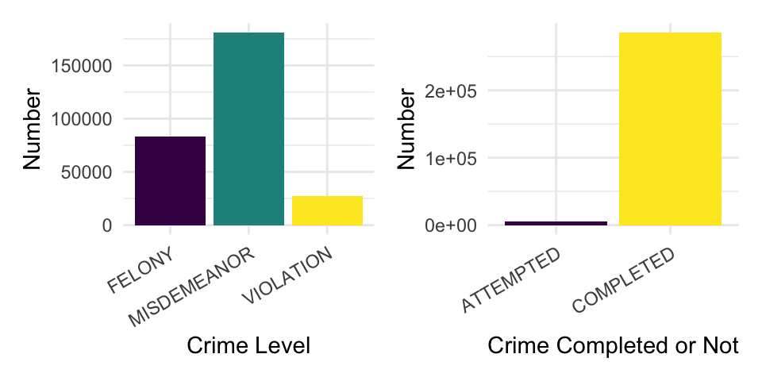
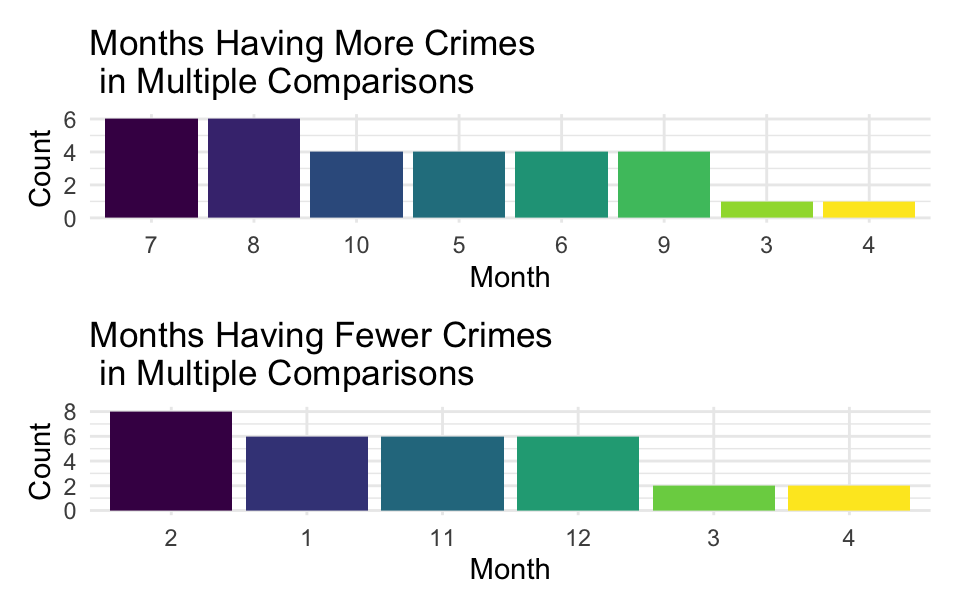
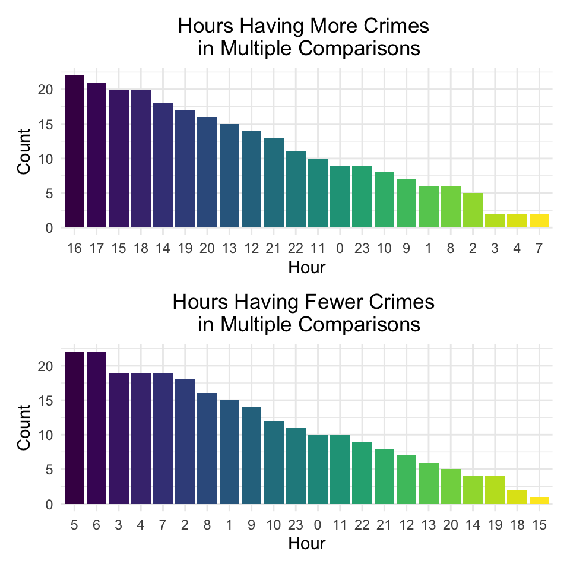
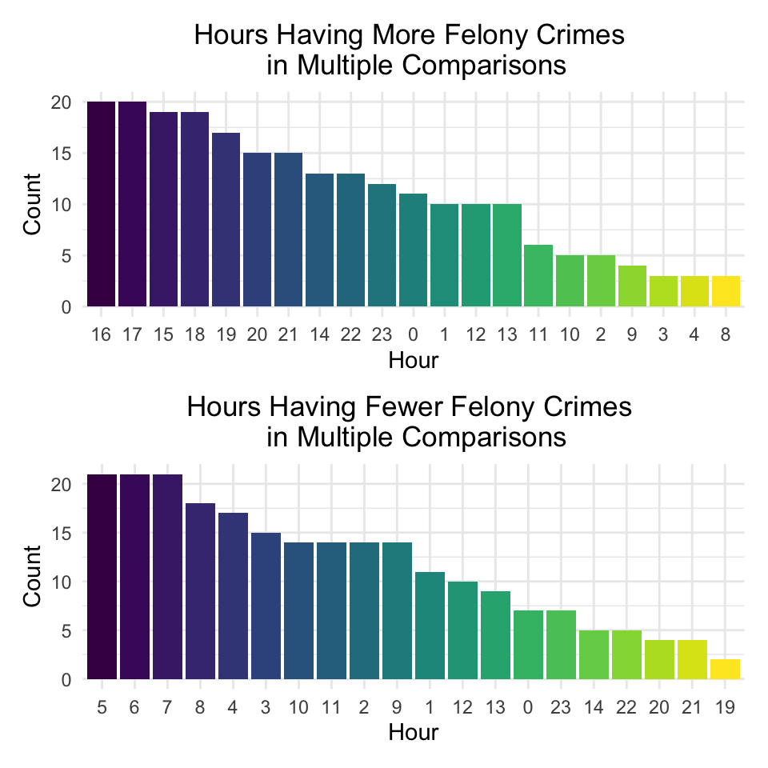
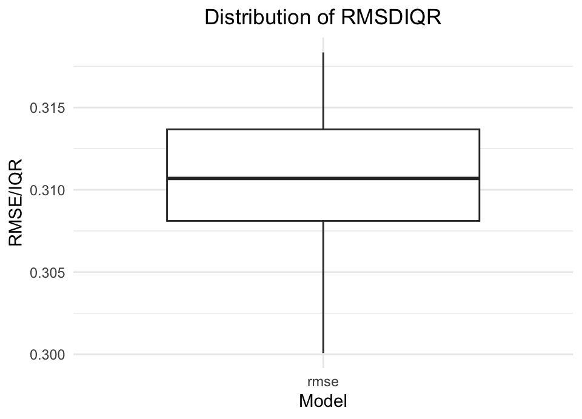

Studying at Columbia University, except enjoying fascinating school life, we should always be concerned about the safety problem. Frequent email alerts, Citizen apps popping up, and terrifying news, they are all reminding us that there are many underlying unsafe factors around us. The New York government has made a public crime map at https://maps.nyc.gov/crime/. The information in it, however, is way too redundant for a student as we are more concerned about the safety conditions around our campus and our places of residence. Luckily, NYPD has posted the up-to-date dataset that includes all valid felony, misdemeanor, and violation crimes reported to the New York City Police Department, and it includes more information that we are interested in, for example, the time of occurrence of the complaint, the victim’s statistics. After analyzing the dataset, we can have a more comprehensive understanding about the crimes around us. Finally, we want to draw a fine map locating the crime incidents around our campus, informing us what time may be more dangerous and we can avoid activities at that time. The map will give students the option of looking up when they go outside most often to help them more accurately determine the likelihood of danger. We also want this result to help all the staff and students in Columbia University have an opportunity to evaluate the risk, avoid the danger, and allow them to access crime rates in the areas they care about to keep themselves safe.
The more current data is from NYC Opendata, https://data.cityofnewyork.us/Public-Safety/NYPD-Complaint-Data-Current-Year-To-Date-/5uac-w243. The historical data set is from https://data.cityofnewyork.us/Public-Safety/NYPD-Complaint-Data-Historic/qgea-i56i, which includes more data but is not sufficient in data of 2022. We combined these two datasets and the final output dataset have around 7 million records. Therefore, this dataset is expected to be accurate, authoritative, prompt and worth analyzing.
Since the main purpose of this product is to help all the staff and students in Columbia University, so we decide to let our map cover the Manhattan area, and in order to give them most meaningful results, we focus the year after 2010. Then, we do the following: 1. select the rows recording date later than 2010-01-01. 2. Select the borough as Manhattan. 3. select the variables we are interested in. 4. filter the latitude and longitude to limit it around Columbia campus (roughly). The latitude range is approximately from 86 street subway station to George Washing Bridge (West 178th street). The longitude range is from Hudson river to Harlem river and Central park. This region covers Columbia University campus (and CUIMC) and the neighborhood area. At the meanwhile, we filtered out those crimes happening in the residences (apartment, house…), so that this data can reflect the crimes we can encounter in our daily lives.
We use the following items and rename them to do our project:
id: case id numbers.
boro: Manhattan area.
year: The year this specific case happened.
month: The month this specific case
happened.
day: The day this specific case happened.
hour: The exact hour this specific case
happened.
minute: The exact minute this specific case
happened.
second: The exact second this specific case
happened.
success_fail: Indicator of whether crime was
successfully completed or attempted, but failed or was interrupted
prematurely.
level: Level of offense: felony, misdemeanor,
violation.
description: Description of offense corresponding
with key code.
location: Specific location of occurrence in or
around the premises; inside, opposite of, front of, rear of.
susp_age: the age of suspect.
susp_race: the race of suspect.
susp_sex: the sex of suspect.
vic_age: the age of victim.
vic_race: the race of victim.
vic_sex: the sex of victim.
logitude: Logitude at Global Coordinate
System.
latitude: Latitude at Global Coordinate
System.
In this part, we want to have an overall sense about the crimes around Columbia University campus (including CUIMC). We pictured the proportion of each level of crimes, and the characteristics of suspects and victims. We also focused on the total crime numbers across the years, showing a pattern of the fluctuation of offense number with the months and times, so that we can have an idea about when it will be more dangerous and need more caution. At the same time, we also captured some interesting point of offense number.
filter_data = read_csv("../data/full_filter_data.csv")
p <- c() # a list to save plots
p[[1]] <- ggplot(aes(x = level, fill = level), data = filter_data) +
geom_bar() +
labs(x = "Crime Level", y = "Number") + guides(fill = "none")+
theme(axis.text.x = element_text(angle = 30, hjust = 1, vjust = 1))
p[[2]] <- ggplot(aes(x = success_fail, fill = success_fail), data =
filter_data)+
geom_bar()+
labs(x = "Crime Completed or Not", y = "Number")+ guides(fill = "none") +
theme(axis.text.x = element_text(angle = 30, hjust = 1, vjust = 1))
p[[1]] + p[[2]]
The number of misdemeanor crime is the most (62.1%), while the number of felony is approximately half of misdemeanor (28.7%). The least type is violation (10%). Here exists a selection bias, most of people would not report a violation to the police. This figure does not indicate violation crimes is the least type in reality. At the meanwhile, nearly all (98%) of the crimes are completed – do not put your faith in luck that someone can help you, try to avoid them as much as you can!
To have a closer look to the different levels, we listed top 5 descriptions from different level.
felony <- filter_data %>%
group_by(level, description) %>%
filter(level == "FELONY") %>%
summarise(number = n()) %>%
arrange(desc(number)) %>%
head(5)
mis <- filter_data %>%
group_by(level, description) %>%
filter(level == "MISDEMEANOR") %>%
summarise(number = n()) %>%
arrange(desc(number)) %>%
head(5)
vio <- filter_data %>%
group_by(level, description) %>%
filter(level == "VIOLATION") %>%
summarise(number = n()) %>%
arrange(desc(number)) %>%
head(5)
rbind(felony, mis, vio) %>%
knitr::kable(align = 'c')| level | description | number |
|---|---|---|
| FELONY | GRAND LARCENY | 22359 |
| FELONY | ROBBERY | 13449 |
| FELONY | FELONY ASSAULT | 11553 |
| FELONY | CRIMINAL MISCHIEF & RELATED OF | 5677 |
| FELONY | FORGERY | 5466 |
| MISDEMEANOR | PETIT LARCENY | 65112 |
| MISDEMEANOR | CRIMINAL MISCHIEF & RELATED OF | 29257 |
| MISDEMEANOR | ASSAULT 3 & RELATED OFFENSES | 25814 |
| MISDEMEANOR | DANGEROUS DRUGS | 21804 |
| MISDEMEANOR | VEHICLE AND TRAFFIC LAWS | 5294 |
| VIOLATION | HARRASSMENT 2 | 26042 |
| VIOLATION | MISCELLANEOUS PENAL LAW | 658 |
| VIOLATION | ADMINISTRATIVE CODE | 117 |
| VIOLATION | DISORDERLY CONDUCT | 88 |
| VIOLATION | OTHER STATE LAWS | 33 |
Next, we focus on the portrait of suspects and victims. We used age group, race and gender to characterize them.
filter_data %>%
filter(susp_age %in% c("<18", "18-24", "25-44", "45-64", "65+",
"UNKNOWN")) %>%
mutate(susp_age = as.factor(susp_age)) %>%
count(susp_age, level) %>%
plot_ly(x = ~ susp_age, y = ~n, type = "bar", color = ~ level, colors = "viridis") %>%
layout(title = "Suspects' Age Group", xaxis = list(title = ""), yaxis = list(title = "Number"))filter_data %>%
filter (susp_race != "(null)") %>%
mutate(susp_age = as.factor(susp_race)) %>%
count(susp_race, level) %>%
plot_ly(x = ~ susp_race, y = ~n, type = "bar", color = ~ level, colors = "viridis") %>%
layout(title = "Suspects' Race", xaxis = list(title = ""), yaxis = list(title = "Number"))filter_data %>%
filter (susp_sex != "(null)") %>%
mutate(susp_sex = as.factor(susp_sex)) %>%
count(susp_sex, level) %>%
mutate(susp_sex = recode(susp_sex, U = "Unknown", F = "Female", "M" = "Male")) %>%
plot_ly(x = ~ susp_sex, y = ~n, type = "bar", color = ~ level, colors = "viridis") %>%
layout(title = "Suspects' Sex", xaxis = list(title = ""), yaxis = list(title = "Number"))filter_data %>%
filter(vic_age %in% c("<18", "18-24", "25-44", "45-64", "65+",
"UNKNOWN")) %>%
mutate(vic_age = as.factor(vic_age)) %>%
count(vic_age, level) %>%
plot_ly(x = ~ vic_age, y = ~n, type = "bar", color = ~ level, colors = "viridis") %>%
layout(title = "Victims' Age Group", xaxis = list(title = ""), yaxis = list(title = "Number"))filter_data %>%
filter (vic_race != "(null)") %>%
mutate(vic_age = as.factor(vic_race)) %>%
count(vic_race, level) %>%
plot_ly(x = ~ vic_race, y = ~n, type = "bar", color = ~ level, colors = "viridis") %>%
layout(title = "Victims' Race", xaxis = list(title = ""), yaxis = list(title = "Number"))filter_data %>%
filter (vic_sex %in% c("D", "E", "F", "M")) %>%
mutate(vic_sex = as.factor(vic_sex)) %>%
count(vic_sex, level) %>%
mutate(vic_sex = recode(vic_sex, F = "Female", "M" = "Male")) %>%
plot_ly(x = ~ vic_sex, y = ~n, type = "bar", color = ~ level, colors = "viridis") %>%
layout(title = "Victims' Sex", xaxis = list(title = ""), yaxis = list(title = "Number"))Through the data, we can see that except unknown, suspects’ age is centered at 25-44 years old, black man. As for the victim, the age group is still centered at 25-44 years old. But the race is more evenly spread, and female number is much more than the suspect group, we will have statistical test to reveal whether there is a difference in the gender of suspects and victims.
Next, we want to look into the fluctuation of crime cases among months and hours, to see if the case number have a correlation with time.
data <- filter_data
month_data <- data %>%
group_by(year, month) %>%
summarise(number = n()) %>%
mutate(month = as.factor(month),
year = as.factor(year))
month_data %>%
plot_ly(y = ~number, color = ~month, type = "box", colors = "viridis") %>%
layout(title = "Crime Number Across Months", xaxis = list(title = "Month"), yaxis = list(title = "Number"))We can roughly see that, in summer there are more crimes, especially from May to August. December and February have fewer cases. We will verify if there is a significant difference between months in statistical testing part.
hour_data = data %>%
group_by(year, month, hour) %>%
summarise(number = n()) %>%
mutate(hour = as.factor(hour),
hour = fct_inseq(hour))
hour_data %>%
plot_ly(y = ~number, color = ~hour, type = "box", colors = "viridis") %>%
layout(title = "Crime Number Across Hours", xaxis = list(title = "Hour"), yaxis = list(title = "Number"))Obvious pattern. It’s counter-intuitive that the time with most cases is not in the midnight, but in the afternoon. Similarly, We will verify if there is a significant difference between months in statistical testing part.
Normally the crime numbers between days are quite alike, but admittedly there can be some days that are more dangerous. For example, Halloween’s Day is generally considered as unsafe. Here we show the days that have the most cases, also we want to see which days are more “peaceful”.
data %>%
group_by(month, day) %>%
summarise(number = n()) %>%
arrange(desc(number)) %>%
head( 5) %>%
knitr::kable(align = 'c', caption = "Days with most crimes")| month | day | number |
|---|---|---|
| 1 | 1 | 1196 |
| 6 | 1 | 1084 |
| 7 | 1 | 1054 |
| 5 | 1 | 1051 |
| 9 | 1 | 1041 |
data %>%
group_by(month, day) %>%
summarise(number = n()) %>%
arrange((number)) %>%
filter(month != 2 & day != 29) %>%
head(5) %>%
knitr::kable(align = 'c', caption = "Days with least crimes")| month | day | number |
|---|---|---|
| 12 | 25 | 370 |
| 12 | 24 | 493 |
| 12 | 26 | 499 |
| 12 | 31 | 513 |
| 12 | 30 | 562 |
The crime numbers in each day across years also varies a lot. It’s a interesting finding that New Years’ day enjoys the most crime cases, and the second is International Children’s Day (sadly). The days with fewest crimes is around Chirstmas Holiday, when most people will stay safely with their family at home.
Whether there is a significant difference in the number of male and female suspects. We calculate how many male and female suspects in month, year, then plot the disturbution of number of male and female suspects.
data <- read_csv("../data/full_filter_data.csv")
gender_data <- data %>%
group_by(year, month, susp_sex) %>%
summarise(number = n()) %>%
mutate(susp_sex = as.factor(susp_sex)) %>%
filter(susp_sex %in% c("F", "M", "U"))
aov_model_1 <- aov(number ~ susp_sex, data = gender_data)
aov_model_1 %>%
broom::tidy() %>%
knitr::kable(digits = 4, align = 'c')| term | df | sumsq | meansq | statistic | p.value |
|---|---|---|---|---|---|
| susp_sex | 2 | 22482073 | 11241036.36 | 397.0255 | 0 |
| Residuals | 456 | 12910789 | 28313.13 | NA | NA |
There is a significant difference in the number of male and female suspects. Through the boxplot in EDA part, we could easily see that male is more likely to be suspects than females if we consider the unknown.
We wonder whether there is a significant difference in the number of male and female victims. So we calculate how many male and female victims in month, year, then plot the disturbution of number of male and female victims. And I also do the same steps for vic_sex include D=Business/Organization, E=PSNY/People of the State of New York.
data <- read_csv("../data/full_filter_data.csv")
female <- data %>%
group_by(year, month, vic_sex) %>%
summarise(number = n()) %>%
mutate(vic_sex = as.factor(vic_sex)) %>%
filter(vic_sex %in% c("F"))
male <- data %>%
group_by(year, month, vic_sex) %>%
summarise(number = n()) %>%
mutate(vic_sex = as.factor(vic_sex)) %>%
filter(vic_sex %in% c("M"))
t.test(pull(female, number), pull(male, number)) %>% broom::glance() %>%
knitr::kable(digits = 4, align = 'c')| estimate | estimate1 | estimate2 | statistic | p.value | parameter | conf.low | conf.high | method | alternative |
|---|---|---|---|---|---|---|---|---|---|
| -117.817 | 469.2353 | 587.0523 | -11.0482 | 0 | 286.4321 | -138.8066 | -96.8274 | Welch Two Sample t-test | two.sided |
There is a significant difference in the number of male and female suspects. Through the boxplot, though compared to the suspect, the female victim number rises a lot, male is still more likely to be victims than females.
data <- read_csv("../data/full_filter_data.csv")
gender_data_rate <- data %>%
filter(susp_sex %in% c("F", "M", "U")) %>%
mutate(success_fail = ifelse(success_fail == "COMPLETED", 1, 0))
reg_successrate = glm(success_fail ~ susp_sex, family=binomial(link="logit"), data = gender_data_rate)
reg_successrate %>%
broom::tidy() %>%
knitr::kable(digits = 4, align = 'c')| term | estimate | std.error | statistic | p.value |
|---|---|---|---|---|
| (Intercept) | 4.0271 | 0.0475 | 84.8640 | 0 |
| susp_sexM | -0.4020 | 0.0512 | -7.8548 | 0 |
| susp_sexU | 0.3592 | 0.0613 | 5.8628 | 0 |
gender_data_rate %>%
group_by(year, success_fail, susp_sex) %>%
summarise(number = n()) %>%
mutate(success_fail = ifelse(success_fail == 1, "COMPLETED", "ATTEMPTED")) %>%
pivot_wider(
names_from = "success_fail",
values_from = "number") %>%
mutate(total = ATTEMPTED+COMPLETED,
rate = COMPLETED/total) %>%
plot_ly(x = ~ susp_sex, y = ~ rate, type = "box", color = ~ susp_sex, colors = "viridis") %>%
layout(xaxis = list(title = "Suspects' Gender"), yaxis = list(title = "Rate"))There is a significant relationship between gender of suspects and successful rate. Through the boxplot, we could see that distribution of the successful rate of male suspects is lower than distribution of the successful rate of female suspects.
data <- read_csv("../data/full_filter_data.csv")
gender_data_rate_1 <- data %>%
filter(vic_sex %in% c("F", "M")) %>%
mutate(success_fail = ifelse(success_fail == "COMPLETED", 1, 0))
reg_successrate_1 = glm(success_fail ~ vic_sex, family=binomial(link="logit"), data = gender_data_rate_1)
reg_successrate_1 %>%
broom::tidy() %>%
knitr::kable(digits = 4, align = 'c')| term | estimate | std.error | statistic | p.value |
|---|---|---|---|---|
| (Intercept) | 4.1047 | 0.0295 | 138.9947 | 0 |
| vic_sexM | -0.4281 | 0.0365 | -11.7174 | 0 |
gender_data_rate_1 %>%
group_by(year, success_fail, vic_sex) %>%
summarise(number = n()) %>%
mutate(success_fail = ifelse(success_fail == 1, "COMPLETED", "ATTEMPTED")) %>%
pivot_wider(
names_from = "success_fail",
values_from = "number") %>%
mutate(total = ATTEMPTED+COMPLETED,
rate = COMPLETED/total) %>%
plot_ly(x = ~ vic_sex, y = ~rate, type = "box", color = ~ vic_sex, colors = "viridis") %>%
layout(xaxis = list(title = "Victims' Gender"), yaxis = list(title = "Rate"))Through the summary, we could see that crimes on male is significantly less to success (though still at a high ratio). According to the boxplot, we could see that distribution of the successful rate of male victims is also lower than distribution of the successful rate of male victims.
In the EDA part, we see that there exist some pattern in month and time in one day, but is it only random error and fluctuation, or there exist a significant difference?
We use group_by and summarize function to get the number of cases in each month and year, and then use the number of cases and month_data to make an ANOVA model to test whether there is a significant difference of number of crime cases among each month.
data <- read_csv("../data/full_filter_data.csv")
month_data <- data %>%
group_by(year, month) %>%
summarise(number = n()) %>%
mutate(month = as.factor(month),
year = as.factor(year))
aov_model <- aov(number ~ month, data = month_data)
aov_model %>%
broom::tidy() %>%
knitr::kable(digits = 4, align = 'c')| term | df | sumsq | meansq | statistic | p.value |
|---|---|---|---|---|---|
| month | 11 | 5347936 | 486176.01 | 14.1524 | 0 |
| Residuals | 141 | 4843764 | 34352.94 | NA | NA |
By the result above, we find that there are very significant difference in the crime numbers between months. Therefore, we utilized Tukey’s method for post hoc tests, to see which months are different.
Firstly, we use Turkey methods to analyze the ANOVA model, select the variables which p-value are smaller than 0.05, and arrange them by adj p_value. Then, we separate the contrast to A and B and add two variables “high” and “low” depending on whether estimate is larger than 0 to decide how A and B to fit high and low. Finally, we make a two panel plot to show the order of the months become “high” and “low” in the process of comparing.
aov_posthoc <- TukeyHSD(aov_model, conf.level = .95) %>%
broom::tidy() %>%
filter(adj.p.value < 0.05) %>%
arrange(adj.p.value)
aov_posthoc %>%
head(5) %>%
knitr::kable(digits = 4 )| term | contrast | null.value | estimate | conf.low | conf.high | adj.p.value |
|---|---|---|---|---|---|---|
| month | 8-2 | 0 | 566.5385 | 324.9066 | 808.1704 | 0 |
| month | 7-2 | 0 | 537.9231 | 296.2912 | 779.5550 | 0 |
| month | 12-8 | 0 | -506.5705 | -753.1850 | -259.9560 | 0 |
| month | 5-2 | 0 | 485.3077 | 243.6758 | 726.9396 | 0 |
| month | 9-2 | 0 | 474.6154 | 232.9835 | 716.2473 | 0 |
aov_group <- aov_posthoc %>%
separate(contrast, sep = "-", into = c("A", "B")) %>%
mutate(high = if_else(estimate > 0, true = A, false = B),
low = if_else(estimate > 0, true = B, false = A)) %>%
mutate(high = fct_infreq(high),
low = fct_infreq(low))
aov_fig1 <- aov_group %>%
ggplot(aes(x = high, fill = high)) +
geom_bar(stat = "count") +
labs(x = "Month", y = "Count", title =
"Months Having More Crimes \n in Multiple Comparisons") + guides(fill = "none")
aov_fig2 <- aov_group %>%
ggplot(aes(x = low, fill = low)) +
geom_bar(stat = "count") +
labs(x = "Month", y = "Count",title =
"Months Having Fewer Crimes \n in Multiple Comparisons") + guides(fill = "none")
aov_fig1 / aov_fig2
After pairwise independent multiple tests, we can draw the conclusion. We can roughly divide the months in one year into 3 groups. July, August, October, May, June, September generally have more crimes. February, January, November, December have fewer crimes. While March and April is at medium level, the crime number in this two months are significantly less than those months with excessive crimes, but also significantly more than months that have fewest crimes.
Next, we repeat the steps, to see whether crime number at different time in a day have significant difference.We use group_by and summarize function to get the number of cases in each hour, arrange hour from 0 to 23, and then use the number of cases and hour_data to make an ANOVA model to test whether there is a significant difference of number of crime cases among each hour.
# Is there differnece between case numbers in every hour?
hour_data = data %>%
group_by(year, month, hour) %>%
summarise(number = n()) %>%
mutate(hour = as.factor(hour),
hour = fct_inseq(hour))
aov_hour <- aov(number ~ hour, data = hour_data)
aov_hour %>%
broom::tidy() %>%
knitr::kable(digits = 4 )| term | df | sumsq | meansq | statistic | p.value |
|---|---|---|---|---|---|
| hour | 23 | 3889921 | 169126.9830 | 594.794 | 0 |
| Residuals | 3648 | 1037292 | 284.3455 | NA | NA |
By the result above, there are also significant difference in the mean number of crimes between different hours in one day.
Afterwards, we use Turkey methods to analyze the ANOVA model, steps is consistent with text above.
hour_posthoc <- TukeyHSD(aov_hour, conf.level = .95) %>%
broom::tidy() %>%
filter(adj.p.value < 0.05) %>%
arrange(adj.p.value)
hour_group <- hour_posthoc %>%
separate(contrast, sep = "-", into = c("A", "B")) %>%
mutate(high = if_else(estimate > 0, true = A, false = B),
low = if_else(estimate > 0, true = B, false = A)) %>%
mutate(high = fct_infreq(high),
low = fct_infreq(low))
aov_fig3 <- hour_group %>%
ggplot(aes(x = high, fill = high)) +
geom_bar(stat = "count") +
labs(x = "Hour", y = "Count", title =
"Hours Having More Crimes \n in Multiple Comparisons") + guides(fill = "none")+
theme(plot.title = element_text(hjust = 0.5))
aov_fig4 <- hour_group %>%
ggplot(aes(x = low, fill = low)) +
geom_bar(stat = "count") +
labs(x = "Hour", y = "Count",title =
"Hours Having Fewer Crimes \n in Multiple Comparisons") + guides(fill = "none")+
theme(plot.title = element_text(hjust = 0.5))
aov_fig3 / aov_fig4
The result corresponded with the findings in EDA part. The most dangerous hour is 12:00 - 21:00, all of them are at high ranks in the left figure. Comparatively, 1:00 - 9:00 is the most peaceful time. But it’s our consensus that midnights are more hazardous. So we questioned on if more severe levels of crimes take place more in the midnights.
We use group_by and summarize function to get the number of cases in each level, hour, month and year, and select the data which level equals FELONY, then use the number of cases and hour_level to make an ANOVA model to test whether there is a significant difference of level of crime cases among each hour. Then, we use Turkey methods to analyze the ANOVA model. The other steps is consistent with text above.
hour_level = data %>%
group_by(year, month, hour, level) %>%
filter(level == "FELONY") %>%
summarise(number = n()) %>%
mutate(hour = as.factor(hour),
hour = fct_inseq(hour))
aov_level <- aov(number ~ hour, data = hour_level)
aov_level %>%
broom::tidy() %>%
knitr::kable(digits = 4 )| term | df | sumsq | meansq | statistic | p.value |
|---|---|---|---|---|---|
| hour | 23 | 252643.9 | 10984.5174 | 281.7942 | 0 |
| Residuals | 3648 | 142201.4 | 38.9806 | NA | NA |
level_posthoc <- TukeyHSD(aov_level, conf.level = .95) %>%
broom::tidy() %>%
filter(adj.p.value < 0.05) %>%
arrange(adj.p.value)
level_group <- level_posthoc %>%
separate(contrast, sep = "-", into = c("A", "B")) %>%
mutate(high = if_else(estimate > 0, true = A, false = B),
low = if_else(estimate > 0, true = B, false = A)) %>%
mutate(high = fct_infreq(high),
low = fct_infreq(low))
aov_fig5 <- level_group %>%
ggplot(aes(x = high, fill = high)) +
geom_bar(stat = "count") +
labs(x = "Hour", y = "Count", title =
"Hours Having More Felony Crimes \n in Multiple Comparisons") + guides(fill = "none")+
theme(plot.title = element_text(hjust = 0.5))
aov_fig6 <- level_group %>%
ggplot(aes(x = low, fill = low)) +
geom_bar(stat = "count") +
labs(x = "Hour", y = "Count",title =
"Hours Having Fewer Felony Crimes \n in Multiple Comparisons") + guides(fill = "none")+
theme(plot.title = element_text(hjust = 0.5))
aov_fig5 / aov_fig6
The conclusion still holds true: afternoon is more dangerous. Be cautious! What time you think is safe may be dangerous than your thought.
All variables are categorical, except the response variable crime number. After plotting the histogram, we find the crime number is strongly right-skewed. Using boxcox transformation, we take logarithm of number and the data looks much more normally distributed. We decide to select meaningful age and male and female of gender to do the following prediction. Then we make a lm model to use month, hour, vic_age, vic_race, and vic_sex as predictors. Then we summary the model to get results to test significance of each predictor. Finally, we make a boxplot of the distribution of RMSE/IQR (normalized RMSE).
# find that group by day, every day there are too few cases, not appropriate for prediction, so we choose to ignore the day variable
set.seed(1244)
lm_data <- data %>%
filter(vic_age %in% c("<18", "18-24", "25-44", "45-64", "65+")) %>%
filter(vic_sex %in% c("M", "F")) %>%
filter(vic_race != "(null)") %>%
mutate_at(c("month", "hour", "vic_age", "vic_race", "vic_sex"), as.factor) %>%
group_by(month, hour, vic_age, vic_race, vic_sex) %>%
summarise(log_number = log(n()))
lm_model <- lm(log_number ~ . , data = lm_data)
options(digits = 4)
summary(lm_model, correlation = FALSE) %>%
broom::tidy() %>%
knitr::kable(align = 'c', caption = "Linear model parameters")| term | estimate | std.error | statistic | p.value |
|---|---|---|---|---|
| (Intercept) | -1.5058 | 0.0393 | -38.3320 | 0.0000 |
| month2 | -0.0464 | 0.0238 | -1.9533 | 0.0508 |
| month3 | 0.0774 | 0.0236 | 3.2781 | 0.0010 |
| month4 | 0.0735 | 0.0236 | 3.1104 | 0.0019 |
| month5 | 0.2214 | 0.0235 | 9.4388 | 0.0000 |
| month6 | 0.2671 | 0.0234 | 11.3998 | 0.0000 |
| month7 | 0.2909 | 0.0233 | 12.4718 | 0.0000 |
| month8 | 0.2773 | 0.0234 | 11.8505 | 0.0000 |
| month9 | 0.2856 | 0.0235 | 12.1713 | 0.0000 |
| month10 | 0.1403 | 0.0235 | 5.9638 | 0.0000 |
| month11 | 0.0413 | 0.0235 | 1.7554 | 0.0792 |
| month12 | -0.0171 | 0.0236 | -0.7247 | 0.4686 |
| hour1 | -0.1825 | 0.0344 | -5.3102 | 0.0000 |
| hour2 | -0.3163 | 0.0349 | -9.0652 | 0.0000 |
| hour3 | -0.3901 | 0.0352 | -11.0760 | 0.0000 |
| hour4 | -0.4544 | 0.0360 | -12.6362 | 0.0000 |
| hour5 | -0.6499 | 0.0363 | -17.8809 | 0.0000 |
| hour6 | -0.7334 | 0.0358 | -20.4907 | 0.0000 |
| hour7 | -0.3137 | 0.0341 | -9.2079 | 0.0000 |
| hour8 | -0.0269 | 0.0332 | -0.8111 | 0.4173 |
| hour9 | 0.0293 | 0.0330 | 0.8868 | 0.3752 |
| hour10 | 0.1247 | 0.0330 | 3.7783 | 0.0002 |
| hour11 | 0.1929 | 0.0327 | 5.8923 | 0.0000 |
| hour12 | 0.3899 | 0.0324 | 12.0161 | 0.0000 |
| hour13 | 0.3674 | 0.0326 | 11.2777 | 0.0000 |
| hour14 | 0.4884 | 0.0322 | 15.1804 | 0.0000 |
| hour15 | 0.6093 | 0.0323 | 18.8838 | 0.0000 |
| hour16 | 0.6033 | 0.0322 | 18.7278 | 0.0000 |
| hour17 | 0.5842 | 0.0323 | 18.0674 | 0.0000 |
| hour18 | 0.5743 | 0.0323 | 17.7643 | 0.0000 |
| hour19 | 0.4524 | 0.0325 | 13.9123 | 0.0000 |
| hour20 | 0.4142 | 0.0326 | 12.6987 | 0.0000 |
| hour21 | 0.2844 | 0.0331 | 8.6005 | 0.0000 |
| hour22 | 0.1839 | 0.0335 | 5.4892 | 0.0000 |
| hour23 | 0.0922 | 0.0337 | 2.7384 | 0.0062 |
| vic_age18-24 | 0.6691 | 0.0165 | 40.4323 | 0.0000 |
| vic_age25-44 | 1.7845 | 0.0163 | 109.7964 | 0.0000 |
| vic_age45-64 | 1.1759 | 0.0164 | 71.8018 | 0.0000 |
| vic_age65+ | -0.2352 | 0.0178 | -13.1836 | 0.0000 |
| vic_raceASIAN/PACIFIC | 1.2560 | 0.0263 | 47.8290 | 0.0000 |
| vic_raceBLACK | 2.9660 | 0.0255 | 116.4605 | 0.0000 |
| vic_raceBLACK HISPANIC | 1.5530 | 0.0258 | 60.2901 | 0.0000 |
| vic_raceUNKNOWN | 0.9728 | 0.0263 | 36.9415 | 0.0000 |
| vic_raceWHITE | 2.1920 | 0.0256 | 85.4883 | 0.0000 |
| vic_raceWHITE HISPANIC | 2.5362 | 0.0255 | 99.4092 | 0.0000 |
| vic_sexM | 0.2796 | 0.0097 | 28.9211 | 0.0000 |
summary(lm_model) %>%
broom::glance() %>%
knitr::kable(align = 'c', caption = "Linear model statistics")| r.squared | adj.r.squared | sigma | statistic | p.value | df | df.residual | nobs |
|---|---|---|---|---|---|---|---|
| 0.7564 | 0.7556 | 0.5803 | 1009 | 0 | 45 | 14622 | 14668 |
cv_result =
crossv_mc(lm_data, 100) %>%
mutate(model = map(train, ~lm(log_number ~ ., data =.x))) %>%
mutate(rmse = map2_dbl(model, test,
~rmse(model = .x, data = .y)))
sum_number <- summary(lm_data$log_number) %>%
broom::tidy()
IQR <- sum_number$q3 - sum_number$q1
cv_result %>%
select(starts_with("rmse")) %>%
pivot_longer(
everything(),
names_to = "model",
values_to = "rmse",
names_prefix = "rmse_") %>%
mutate(model = fct_inorder(model)) %>%
ggplot(aes(x = model, y = rmse/IQR)) + geom_boxplot() +
labs(x = "Model", y = "RMSE/IQR", title = "Distribution of RMSDIQR") +
theme(plot.title = element_text(hjust = 0.5))
The model fits so well as the adjusted R squared is 0.756 with a extreme small p value. Moreover, we use normalized RMSE as the reference to evaluate the prediction ability of this model. It turns out to be good compared to the IQR, which means it’s prediction error is less than \(\frac{1}{3}\) IQR.
We used Shiny app to developed a map that can reflect the crime numbers at (and across) different years, months, hours, as well as the types of crime. From this map, we can always check it before we are heading to our destination, avoid the dangerous distinct, and choose a safe way.
Please access the map by this link : https://samuelsun.shinyapps.io/cu_shinymap/
For the suspect, the age group of 25-44 is the most; for the victim, the age group of 25-44 is also the most.
Most of the suspects and victims are male.
Most of the level of crime is MISDEMEANOR
July, August, October, May, June, September generally have more crimes；February, January, November, December have fewer crimes；While March and April is at medium level, the crime number in this two months are significantly less than those months with excessive crimes, but also significantly more than months that have fewest crimes.
The most dangerous hour is 12:00 - 21:00; comparatively, 1:00 - 9:00 is the most peaceful time.
Hour 16 and 17 has the high-level of the crime; hour 5 and 6 has the lower level of crime.